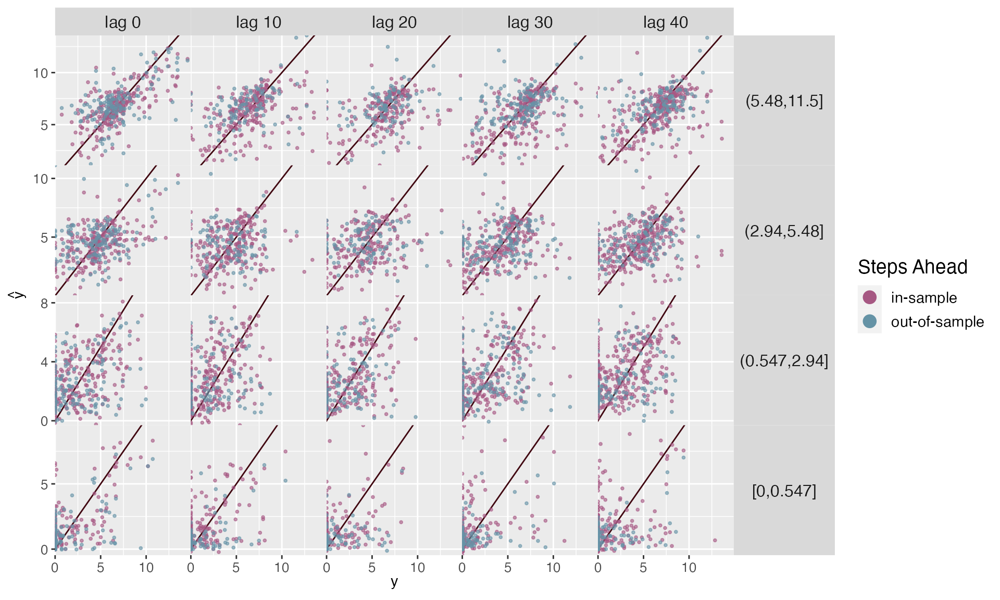
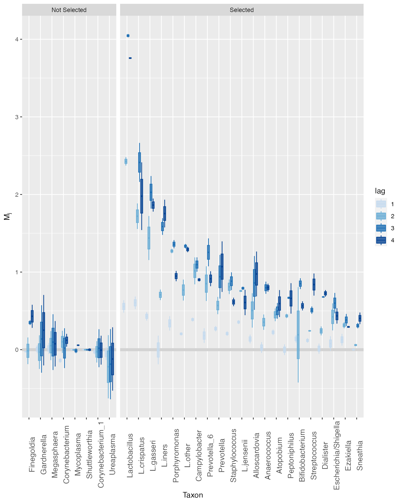
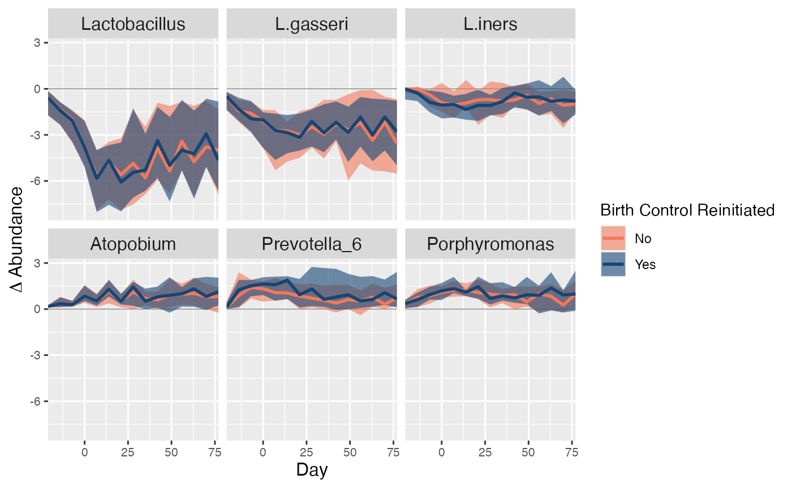
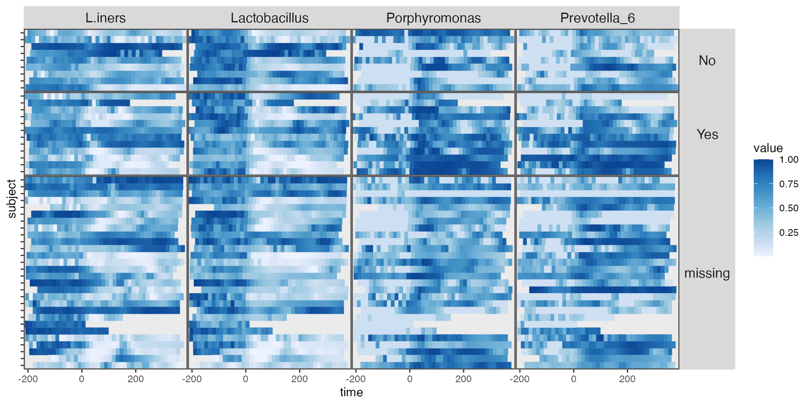

postpartum
postpartum.Rmd
reads <- read_csv("https://figshare.com/ndownloader/files/40322782/reads.csv") |>
column_to_rownames("sample")
samples <- read_csv("https://figshare.com/ndownloader/files/40322776/samples.csv")
subject_data <- read_csv("https://figshare.com/ndownloader/files/40322773/subject.csv")
interventions <- read_csv("https://figshare.com/ndownloader/files/40322770/interventions.csv") |>
column_to_rownames("sample")
ts <- reads |>
ts_from_dfs(interventions, samples, subject_data) |>
interpolate(delta = 14, method = "linear")
values_df <- pivot_ts(ts)
taxa <- c("Lactobacillus", "Prevotella")
interaction_barcode(values_df, taxa, "BirthControlYesNo", width = 14)
interaction_barcode(values_df, taxa, "bmi_cut", width = 14)
subject_data(ts) <- subject_data(ts) |>
select(subject, BirthControlYesNo) |>
mutate(
BCYes = 1 * (BirthControlYesNo == "Yes"),
BCNo = 1 * (BirthControlYesNo == "No")
) |>
select(subject, starts_with("BC"))
fit <- mbtransfer(ts, 3, 3)Smoothing and Out-of-Sample Performance
ts_missing <- subset_values(ts, 1:6)
ts_preds <- list()
ts_preds[["in-sample"]] <- predict(fit, ts_missing)
fit <- mbtransfer(ts[1:25], P = 3, Q = 3)
ts_preds[["out-of-sample"]] <- predict(fit, ts_missing[26:49])
map_dfr(ts_preds, ~ reshape_preds(ts, .), .id = "generalization") |>
filter(h > 0, h < 50) |>
mutate(h = 10 * floor(h / 10)) |>
ggplot() +
geom_abline(slope = 1, col = "#400610") +
geom_point(aes(y, y_hat, col = generalization), size = .7, alpha = .6) +
facet_grid(factor(quantile, rev(levels(quantile))) ~ glue("lag {h}"), scales = "free_y") +
labs(x = expression(y), y = expression(hat(y)), col = "Steps Ahead") +
scale_x_continuous(expand = c(0, 0), n.breaks = 3) +
scale_y_continuous(expand = c(0, 0), n.breaks = 3) +
scale_color_manual(values = c("#A65883", "#6593A6")) +
guides("color" = guide_legend(override.aes = list(size = 4, alpha = 1))) +
theme(
axis.text = element_text(size = 10),
panel.spacing = unit(0, "line"),
strip.text.y = element_text(angle = 0, size = 12),
strip.text.x = element_text(angle = 0, size = 12),
legend.title = element_text(size = 14),
legend.text = element_text(size = 11),
)
ws <- steps(c("birth" = TRUE), lengths = 2:4, L = 4)
staxa <- select_taxa(ts, ws[[1]], ws[[2]], ~ mbtransfer(., 3, 3), n_splits = 2)
#> Training models for split 1/2
#> Training models for split 2/2
staxa$ms |>
mutate(
taxon = taxa(ts)[taxon],
lag = as.factor(lag),
selected = ifelse(taxon %in% unlist(staxa$taxa), "Selected", "Not Selected")
) |>
ggplot() +
geom_hline(yintercept = 0, size = 2, col = "#d3d3d3") +
geom_boxplot(aes(reorder(taxon, -m), m, fill = lag, col = lag), alpha = 0.8) +
facet_grid(. ~ selected, scales = "free_x", space = "free_x") +
scale_fill_manual(values = c("#c6dbef", "#6baed6", "#2171b5", "#084594")) +
scale_color_manual(values = c("#c6dbef", "#6baed6", "#2171b5", "#084594")) +
labs(y = expression(M[j]), x = "Taxon") +
theme(axis.text.x = element_text(angle = 90, size = 11))
#ggsave("~/Downloads/postpartum-mirror.png", height = 5, width = 10)
ws <- steps(c("birth" = TRUE), lengths = 2, L = 10)
start_ix <- map_dbl(ts, ~ min(which(.@time >= -14))) - 1
sim_bc <- list()
for (i in 0:1) {
bc <- subject_data(ts) |>
mutate(BCYes = rep(i, n()), BCNo = rep(1 - i, n()))
sim_bc[[i + 1]] <- counterfactual_ts(ts, ws[[1]], ws[[2]], start_ix) |>
map(~ replace_subject(., bc)) |>
map(~ predict(fit, .))
}
focus_taxa <- c("Porphyromonas", "Lactobacillus", "Prevotella_6", "L.gasseri", "L.iners", "Atopobium")
rdata <- sim_bc |>
map_dfr(~ ribbon_data(.[[2]], .[[1]], focus_taxa, delta = 7), .id = "BC") |>
mutate(
BC = fct_recode(BC, No = "1", Yes = "2")
) |>
filter(time > -25, time < 80)
pal <- c("#F2785C", "#144673")
ribbon_plot(rdata, group = "BC") +
facet_wrap(~ reorder(taxon, median)) +
labs(y = expression(paste(Delta, " Abundance")), x = "Day", fill = "Birth Control Reinitiated", col = "Birth Control Reinitiated") +
scale_color_manual(values = pal) +
scale_fill_manual(values = pal) +
theme(
axis.title = element_text(size = 12),
strip.text = element_text(size = 12)
)
#ggsave("~/Desktop/laboratory/talks/2023/20230414/figures/counterfactual_postpartum_staxa.png", width = 9, height = 4.5)
values_df <- pivot_ts(ts) |>
group_by(taxon) |>
mutate(value = rank(value) / n()) |>
left_join(subject_data)
vis_taxa <- c("Lactobacillus", "L.iners", "Porphyromonas", "Prevotella_6")
interaction_hm(values_df, vis_taxa, "BirthControlYesNo", -1, width = 14) +
theme(
axis.text.y = element_blank(),
strip.text = element_text(size = 12)
)
ggsave("~/Downloads/cover.png", dpi = 1000, width = 10, height = 4)
#ggsave("~/Desktop/laboratory/talks/2023/20230414/figures/progressive_disclosure_postpartum.png", width = 10, height = 4.5)